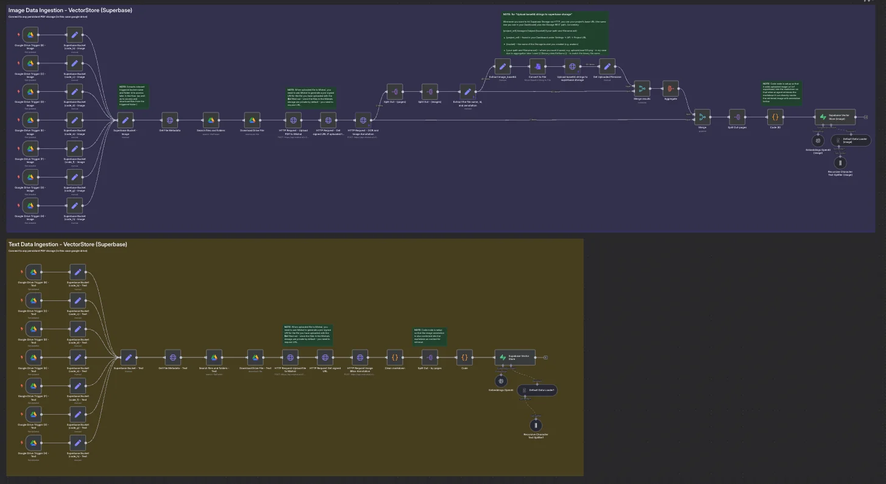
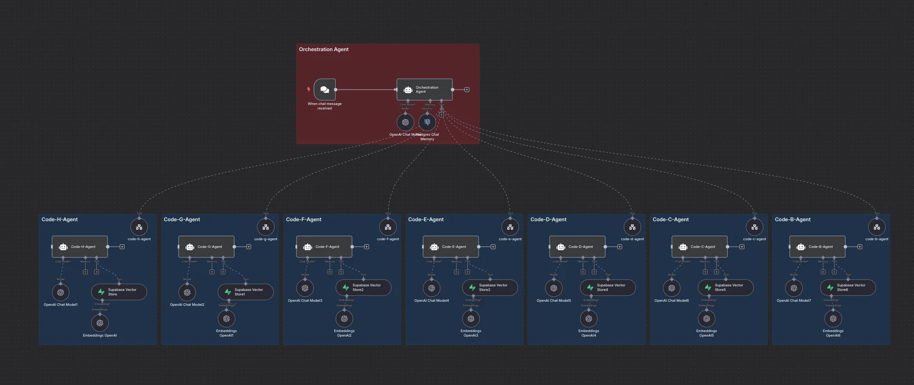

OCR → chunks → vectors
Mistral OCR + heading-aware chunking → Supabase pgvector.
Multi-agent retrieval system
 Agents & automation / n8n Building Code RAG
Agents & automation / n8n Building Code RAGA multi-agent Retrieval-Augmented Generation system for the New Zealand Building Code, built entirely in n8n. Specialized agents handle specific code sections (B through H) with dedicated Supabase vector stores, while a GPT-4.1 orchestration layer analyzes queries and routes them to the appropriate specialist. Document ingestion is automated: Google Drive triggers detect new PDFs, Mistral OCR extracts text and annotates images, and OpenAI embeddings land in section-specific vector tables.
Standard RAG over a long, structured code-document tends to hallucinate cross-references and miss section context. A single retriever can't tell fire from structure.
Mistral OCR + heading-aware chunking → Supabase pgvector.
A lightweight router classifies the question, then a specialist agent answers with its scoped index.
All wiring lives in n8n — easy to audit, fork, and extend with new specialists.
Webhook endpoint receives the user message.
GPT-4.1 (temp 0.4) analyzes query intent and routes; PostgreSQL memory (orch_agent_history) preserves conversation context.
One of 7 Code-section tools (B–H) selected — e.g. Code-C Protection from Fire, Code-H Energy Efficiency.
Code-X agent (GPT-4.1, specialized prompts) runs semantic search in its dedicated Supabase vector store.
Retrieved context synthesized into a Building-Code-compliant answer.
Seven specialist agents (Code B–H), each with a dedicated knowledge base and prompt-engineered expertise.
A GPT-4.1 orchestration agent analyzes the query and routes it to the appropriate specialist.
Images are reformatted and annotated for vector storage, so the LLM can render relevant images in chat responses.
Mistral-OCR-Latest runs over every document, triggered by Google Drive uploads.
Text and image content share OpenAI embeddings in Supabase.
PostgreSQL-backed history keeps follow-up queries in context.
Explore the material
behind the project.
Presentations, research, and supporting material from the project repository, alongside the original project media.
How the orchestration agent routes questions to specialist Building Code agents and their vector stores.

Enlarge ↗From document detection and OCR to text and image embeddings in section-specific knowledge stores.

Enlarge ↗Read the project overview, setup notes, and technical documentation.
2 images · 1 videos
Select an image to explore.


Screen recording of the n8n Building Code RAG workflow in use.
Have an idea, a challenge, or a different perspective?
I’d love to hear it.
{kind=link}
{kind=link}
{kind=link}
{kind=link}